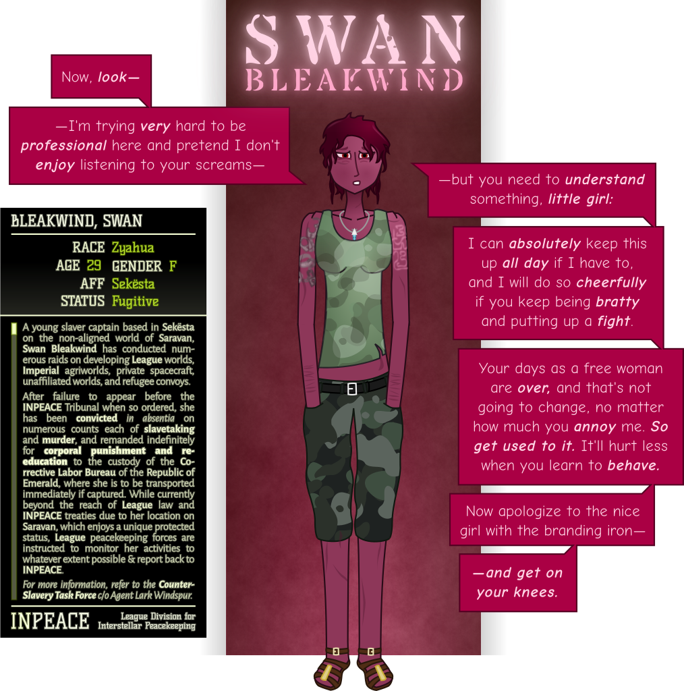
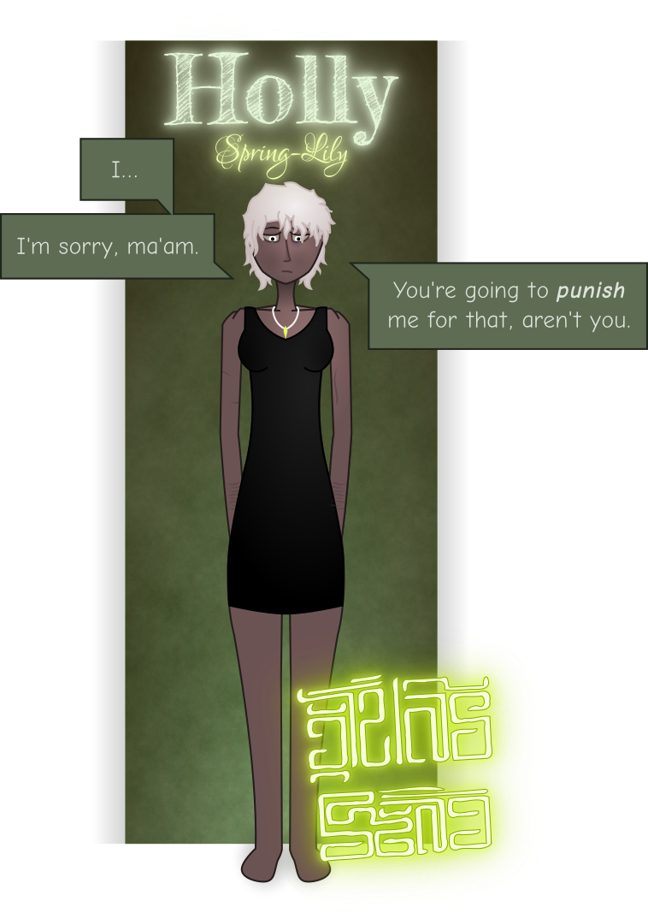

Sekësta. The arse of the archipelago. Shithole to end all shitholes. My final destination.
I step off the rickety barge onto an equally rickety pier. The hot sun is beating down overhead and reluctantly I unbutton my vest. At least the goddamn pirates didn’t take all my clothes.
“Get on! Get moving!” I wince at a cry of pain and look up to see a throng of naked prisoners being led up the pier, shackled together, a truncheon-wielding enforcer at their back. She leers at my bare midriff as I pass and hollers something at me in Saramyr. Not for the first time, I’m relieved I don’t speak it.
I finger the handful of platinum sovereigns in my purse, running through the math again in my head. At the cheapest, nastiest tavern in all Saravan I might be able make them last maybe... six more weeks? Six more weeks to try and talk a crew into hiring me.
I glance morosely at a dealer wandering down the hill, shouting in three different languages and waving a fistful of vials in the air. Looking on the bright side, I’ve got more than enough to buy a fatal dose of opium.
I sigh, and zip my purse back shut. The last thing I need is a pickpocket making off with what little I’ve got left.
Navigating by memory, I head up the avenue towards the hilltop. The place hasn’t changed much. Greasy taverns across the street from slave pens. A Kapa hawking “authentic Khmai cuisine” from a dilapidated food cart. A small squad of enforcers herding freshly-captured slaves into a processing center. This place reeks of human misery.
I stop outside one of the nicer buildings, and gazing up at it, I take a deep breath. It’s not too late to turn back, I remind myself.
But where the fuck else is there to go?
I step up to the door. An enforcer blocks my way.
“I don’t recognize you.”
I sigh. “I’m here to see Swan. If she’s in.”
“That so?” The enforcer gazes at me skeptically. “She expecting you?”
I let out a hollow laugh. “God, no. Definitely not.”
She raises an eyebrow. “You her friend or something?”
“Or something.”
The enforcer shrugs, and steps aside. “Go wait in the lobby, then. Just give your name to the receptionist.”
“Copy that. Thanks.” I push through the doors, and blink a few times as I adjust to the lower light.
They’ve repainted.
The receptionist frowns at me as I step up to the desk. “...do I know you?” she asks.
“Yes, you do, Daisy,” I reply, putting my palms on her desk and leaning forward. “Is Swan in? I need to see her.”
“She is, yes. Do you h—”
“No, I don’t have an appointment. Tell her it’s Holly.”
I look down and sigh at the clicks, whirs, and chirps as every gun in the room is fixed on me.
Daisy sits back and folds her arms. “...you grew your hair out,” she mutters accusingly after a moment.
“Yeah. Can you blame me?”
“I would have recognized you if you hadn’t,” she pouts. She fiddles with the switchboard for a moment and then lifts the receiver from the phone. “Mistress Bleakwind, ma’am? You won’t believe who just walked in and asked for you.”
I turn slowly, lifting my hands theatrically into the air as I look around the room. Three enforcers, a couple of functionaries, and a raider commander all have their pieces drawn and aimed at me. Everyone else is slowly backing out of the room.
“So it’s ‘dead or alive,’ now, is it?” I ask, fixing my gaze on the raider.
He glares at me.
“Put your toys away, you idiots! None of you are getting paid.”
I squeeze my eyes shut involuntarily for a moment and swallow hard at the familiar, beautiful, brutal voice. I turn towards the door, lowering my hands.
The force of the slap knocks my head to the side, and I let out a small cry of pain. As I turn to look up at her, wincing at the sting, Swan grabs me by the throat with both hands, digging her thumbnails into my chin.
“You piece of shit.”
“Nice to see you too, sweetheart.”
She pulls me close and kisses me aggressively for a moment. The familiar touch sends a warm and not entirely welcome jolt of pleasure through my body. I return the kiss gently, hesitantly.
Swan draws back, sucking in a deep breath of air that rattles her slim and powerfully-built body with its force. “Where in all the Abyss have you been?” she blurts out, squeezing my shoulder as if to reassure herself I’m not just a trick of the light.
I purse my lips. “Around.”
“You didn’t even say goodbye!”
“Would you have let me leave if I had?”
She grips my upper arm and turns, leading me out of the room and into the lift. “Floor three,” she instructs the attendant.
“Yes, mistress.”
I lean against the back of the lift, gripping the handrail and closing my eyes. I let out a quiet sigh.
“I suppose I should thank you,” Swan says, touching me on the cheek. I flinch. “I’m not gonna have to pay out on that bounty now.”
“So that’s, what, two big ones you owe me?” I reply levelly. “Ow!”
“What I owe you is a flogging!” Swan erupts. The door slides back and she drags me out of the lift by the ear, into a cool, carpeted corridor lined with doors and plants in alcoves. “After all the money I spent on you, after all the trouble I went through to look after you, how could you be so goddamn ungrateful?” She slaps her key into a lock and shoves a door open. “Inside.”
I step hesitantly into the room and she follows, sliding the door shut behind us. It latches with a quiet click.
“Yeah, well,” I mutter. “Maybe I didn’t like being constantly watched and kept under your thumb. Maybe I didn’t like how you used your money to control me, how you wouldn’t let me support myself, how you treated me like a prisoner—”
“Like a prisoner?” Swan exclaims in disbelief, shoving me roughly against a wall. “I treated you like a goddamn princess, Holly!” She grabs me by the hair, yanking down and forcing me to look her in the eye. “I’m going to show you what being a prisoner really means, girl.”
I hold out my wrists. “Go ahead, then,” I reply. “Chain me up and drag me off to the pens with the rest of your haul. Or are you going to flog me yourself first?”
She closes her eyes, sighs, and releases me. “I’m sorry.” She takes me by the wrists, pushes them back down to my side. “I truly am glad to see you, Holly. I’ve been— worried.” She sits down at the dining table, beckons me to sit next to her. “Can I get you anything to drink? Eat? You look... you look very thin.”
“...yeah.” I sit down gingerly. “Something strong and sparkly. Maybe with a side of kharaska.”
“You got it.” Swan stands, pulls open the liquor cabinet. “How’s a 924 Ruby hai lam sound?” she asks, showing me a bottle. “I snagged it on my last raid.”
“...what’s the alcohol content?”
“Sixty proof.”
I pat the table. “Sounds perfect.”
Swan pulls the stopper out and fills two glasses. I pick mine up, breathe in, savoring the scent of the bubbly blue liquid before I take a sip. I smile at the burn as I swallow it, taking a raggedy breath. First booze I’ve tasted in... a fortnight at least.
“That was exactly what I needed.”
Swan smiles at me, sipping from her own glass and ruffling my hair. “I thought of you when I found it.”
I lean back, letting the buzz wash through me. “You never really were much for moving on, were you?”
“Says the girl who came all the way back to Saravan for me.”
“Don’t flatter yourself,” I mutter, staring into the liquid as I swish it around in the glass. “I didn’t wind up at the ass-end of the universe by choice.”
“Tell me, then. What brought you back here?”
“Pirates.” I grip my glass. “I lost everything. We had to sell our ship for food.”
Swan’s face twitches. “Did you get names? Symbols? Tattoos? Anything recognizable?”
I shrug. “They all had this... weird little design on their wrists. One of them called the captain ‘Ginger’ at one point. Other than that, I don’t know what to tell you.”
Swan grabs a notepad and pen from a counter, passing them to me. “Can you draw that symbol you saw?”
“Maybe.” I fiddle with the pen, trying to bring the memory into focus.
“Were they all Khmai or was it just the captain?”
“Nah. Pretty mixed lot.” I make a few quick strokes with the pen, frown, and add a few more. “Okay. I think this is what it looked like.” I pass her the notepad.
“Well, I don’t recognize it, but I’ll ask around. Someone here will.” Swan carefully tears the paper out, making a quick copy before folding it up and slipping it into her pocket. “And then someone is going to pay for fucking with me and mine.”
I sigh, looking down at the table and clutching my head in my hands. It’s all too easy now to remember why I fell for her. That fierce, protective possessiveness. That beautiful, delicate face. That confidence.
“I’m sorry I ran away.”
She looks genuinely surprised. “Really?”
“Yeah. No. I don’t know.” Being back here is making my head fuzzy. It’s hard to remember some things. All too easy to remember others. I don’t even know what’s real anymore.
She sighs, and reaches out. I flinch, but she lays her hand on the table, palm up. Hesitantly, I put my hand in hers, and she squeezes tightly. A memory flashes through unbidden, a party on the Hill. Swan radiant in a flowing dress that perfectly offset the color of her dark, ruddy skin, as I hung off her arm, clad in soft, expensive fabrics I haven’t been able to afford since. I can almost hear the music again.
I haven’t thought about that night in so long.
“I love you. You know that, Holly.”
I nod. “...I know.”
“Do you know why I never let you out of my grip?”
I sigh. “Here it comes.”
“Because this is a dangerous goddamn universe!” Swan blurts. “Even under my protection, this is the deadliest world west of Isheda! You know why I put that bounty on you, Holly? At twice the going rate for a girl your size? I did it so that if someone decided to... to hurt you or enslave you, it would be more profitable not to. So if you got yourself mixed up in some kind of trouble, you’d have a fucking way out. And guess what fucking happened? You fucking did!”
“Did it ever occur to you I can take care of myself!?” I stand, knocking the chair back violently, slamming my palm against the table. “Did it ever occur to you how I did just fine for ten fucking years on my own without your fucking help? Did it ever occur to you that the goddamn galaxy doesn’t revolve around you!?”
“Then there’s the fucking door!” Swan shouts, pointing.
I glare at her. “That’s not fair.”
“Well, guess what, sweetheart? Life isn’t fair!” Swan grabs me by the hair, digging her nails into my scalp. “Pirates aren’t fair. Slavers aren’t fair. Hyperdrive malfunctions aren’t fair. You had a chance, a rare fucking chance, to be safe in this goddamn shithole of a universe, and you threw it away because you cared more about gallivanting around the Jeweled Abyss on some grand adventure than keeping your fucking commitments!”
I grit my teeth, tears dripping from my eyes. “Y-you’re hurting me.”
“And what are you going to do about it, badass? Can’t you ‘take care of yourself?’” I cry out in pain as she pulls harder. “Have you forgotten what your mother did to you? To your father? How many thugs have pushed you around and used you and hurt you? Have you forgotten where all your scars came from?” She releases me slowly, putting a hand on my neck and cheek as her eyes bore into mine. “Or have you found some way to blame them all on me?”
I glare, wiping the tears out of my eyes with a shaking hand. “Sure. Humiliate me. Hurt me. Mock me. That’s love, all right.”
“I wouldn’t have to if you would listen to goddamn reason!” Swan exclaims. “Do you have any idea what it’s like, Holly? Loving someone like you? Someone wild and erratic and unpredictable? Someone... beautiful and special and impossible to ever replace? Someone half again too kind and loving for this brutal, ruthless galaxy? I don’t often feel terror, Holly, abject fucking terror, not even when I’m being shot at by desperate refugees, but when I don’t know where you are, when I don’t know that you’re safe— God, I was starting to wonder if you were dead!”
“I genuinely considered overdosing instead of coming back to you.”
There are tears in her eyes now. “Wh-why would you say something like that?”
“Because it’s true! Because I couldn’t tell what was worse, another round of your cruelty or literal, actual death.”
“Holly...” Swan grips my wrist with both hands. “I know I’ve been hard with you. But, God, it was for your own good! There was no other way to keep you disciplined, to keep you alive — God knows I tried everything else—”
“To keep me obedient!” I try to yank away but she tightens her grip.
“Yes! To keep you obedient! Because your impetuousness is a d-danger to you and everyone around you, and I c-couldn’t fucking lose you!” Her voice is choked with sobs now, her hands shaking. “I couldn’t.”
“Can’t you just let go? Can’t you just move the fuck on? You never got stuck on your other fucktoys like this—”
“No! No, I can’t move on, Holly! I can’t. Not from you. God, how can you call yourself th-that? You’re— you’re s-so much m-m-more than— I—” Her grip slackens and she falls back into her chair, doubled up and sobbing uncontrollably.
“...I’m... s-sorry...” she chokes out.
I sigh, pull my chair closer, and sit down next to her, taking her hand in mine.
“Me too.”
I wrap my arm around her slim shoulders, holding her tightly and resting my head next to hers. She puts a hand on my thigh and shakily kisses my neck. I return the kiss.
“I... still love you, Swan.”
She hugs me tightly, taking shaky, rapid breaths. “H-hearing th-that... that made all th-the other shit I’ve been dealing with today f-feel worth it.” She puts a hand on my neck, caresses me softly. “Thank you.”
“What else’s been going on? Willow giving you a hard time again?”
“Willow is dead, Holly.”
I take a sharp breath. “What!?”
“He took a bullet for me.” Her grip on me tightens; instinctually, my muscles slacken. “League boarded us in the Opal system a year or two back. It was the worst firefight I ever saw. Just a tiny patrol ship but they still managed to free our whole haul, get a third of my crew in irons, and kill most everyone who put up a fight. Those cunts fight like nothing I’ve ever seen. I wonder if that’s what it’s like going up against Imperial Guard.”
“How did you get away?” I whisper, voice small and distant.
“Eagle got the antennas working again somehow and we emptied our capacitor banks at their powerplant. Pinch field dropped for a few seconds, and before the backup could kick in we emergency-jumped. Took weeks to find our way back home. But we got away with our lives, and a couple of the League bastards.” Her face hardens. “We made them pay, don’t worry.”
“Eagle’s okay?”
“Yeah.”
“Wh-what about Carnation?”
“They took her.” Swan looks down, gritting her teeth. “Probably rotting in some League gulag now.”
I slump back in my seat, suddenly numb.
How can Willow be dead?
“I’m... I’m sorry.”
She tightens her hand around my neck. “Do you understand what I mean, when I say the galaxy is a dangerous place? Do you understand why I need to keep you where I can see you? Do you understand why I’m so goddamn terrified?”
Reluctantly, I nod.
“I meant what I said, Holly. It’s not gonna be like last time. I love you.” She takes my wrists in her hands, squeezes tightly. “But it’s going to take you a long time to earn my trust back, and until then—”
“Until then I’m your prisoner. Yeah. I know.” I sigh and rest my forehead on her shoulder.
“I thought you’d put up more of a fight than that.” She ruffles my hair.
“I’m tired of fighting. And I’m tired of hurting you.”
“Good girl,” Swan murmurs tenderly, and slips her hands under my vest, caressing my bare skin. “Now let’s get you out of that dockhand getup and into something more appropriate to your station.”
“...yes, Swan.”
She leads me into her... our bedroom. Slowly, delicately, she undresses me, slipping my vest down my arms until it falls to the floor. I shiver at the sensation of her fingers under my torn and tattered crop. She caresses my breasts for a moment, kissing me lightly, before pulling it over my head and tossing it to the floor. She unbuckles my belt and lets my shorts drop away.
I grasp my wrist nervously as she turns to the closet and slides the door open. Being naked before her... I feel completely stunned, paralyzed, unable to do anything but stand there and wait with pounding heart for what happens next.
She picks through the tops and dresses on hangers, then slips one down and turns. She holds it out in front of me, and I can’t help but blush.
“You kept all my old clothes,” I whisper.
She nods. “Hands over your head.”
I obey and she slips the garment down over my body. I don’t even remember the last time I wore a dress. The silky, thin, stretchy fabric is so different from the roughspun fibers I’ve grown used to in the past few years, caressing my skin and shaping itself to my body. Her fingers linger below my waist as she tugs on the short dress, smoothing out wrinkles and running her thumbs along my thighs.
I finger the fabric of the dress idly. Gone is the sturdy buffer between my body and the world, the pockets full of screws and bolts and odds and ends, the purse full of coin. My skin feels suddenly sensitive and tender, like I’m some blushing maiden on her wedding night and not the hardened star-trotting engineer I can just barely remember being. Fully clothed and I still feel so naked.
It’s like I never left. Like there’s been some break in my timeline, like suddenly all the years have collapsed in on themselves and I’m that same frightened, defenseless girl again.
And Swan can tell. She’s in the business of breaking people down, taking away their self and their agency, making them raw and vulnerable. Her smile is simultaneously tender and predatory as she steps closer and strokes my bare arms.
“You look so much better like this,” she murmurs, kicking my old clothes against the wall. She runs her fingers through my hair, brushing my scalp with her fingernails and making me shiver. “You’ve been away for too long. Welcome home, Holly. Welcome back to where you belong.”
I blush hotly, looking down and biting my lip as she puts her hands around my waist.
“...thank you, mistress.”
